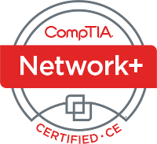
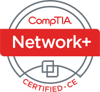

Demitri A. Morgan

- 📱(831) 607-9833  (Google voice)
- ✉demitri.morgan@gmail.com
- âš“Â demitrimorgan.com
- 🔒Public Key
| Agency | Title | Date |
|---|---|---|
| CompTIA | Network+ | March 2015 |
| W3Schools | HTML | November 2014 |
| W3Schools | CSS | November 2014 |
| W3Schools | PHP | November 2014 |
| W3Schools | JavaScript | November 2014 |
| W3Schools | jQuery | November 2014 |
| W3Schools | XML | November 2014 |
 

| Degree | Major | Institution | Year |
|---|---|---|---|
| B.Sc. | Astrophysics | University of California, Santa Cruz | 2009 |